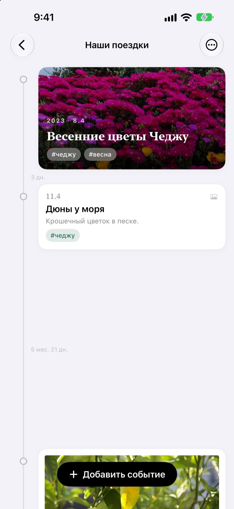
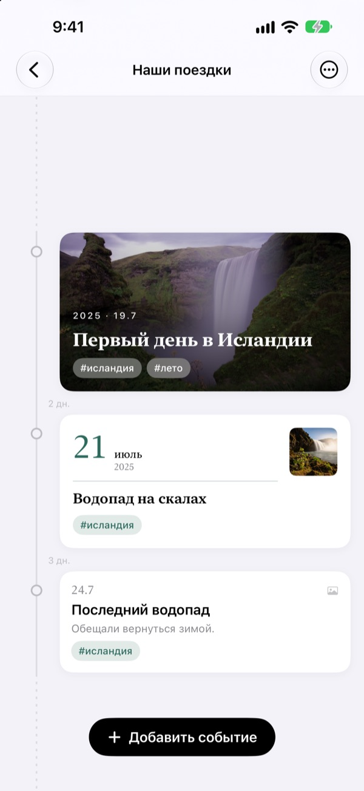
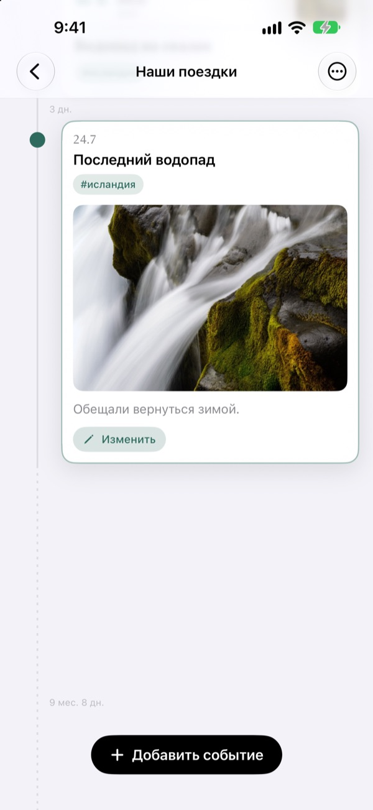
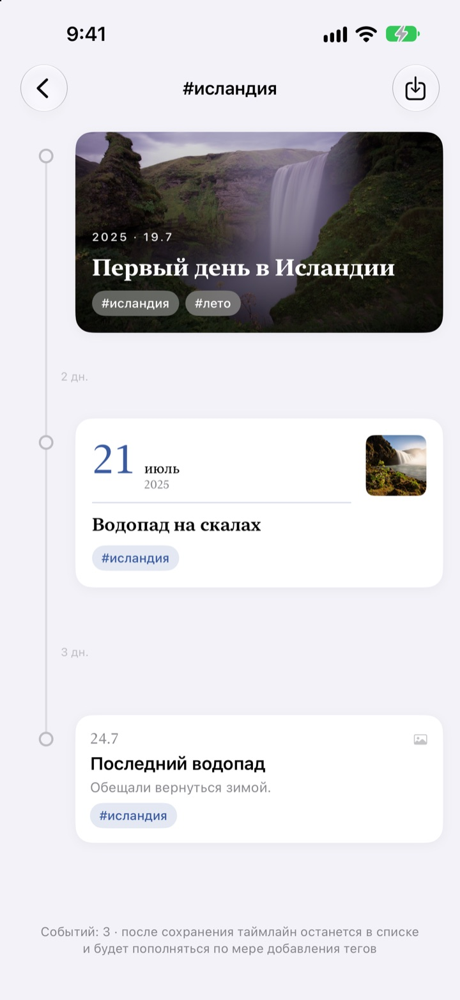
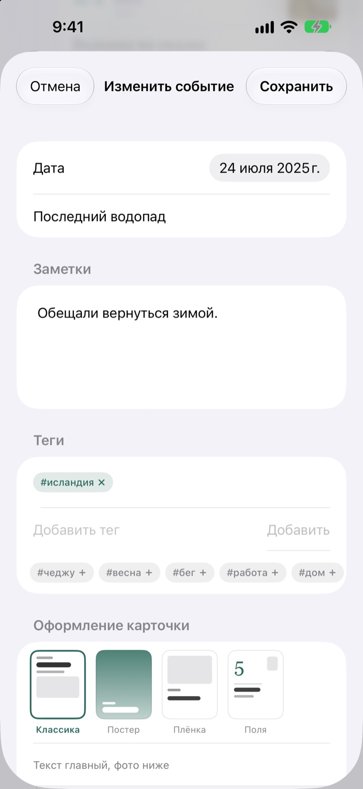

Таймлайн, который
растягивается со временем
Три дня и пять дней стоят как 3 к 5. Долгая пауза вроде двух лет и четырёх месяцев сворачивается в пунктир. По одним расстояниям видно, как шло время.
Все функции бесплатны. Для iPhone и iPad.

Растяните промежутки сами
Каждая кнопка добавляет событие после последнего. Расстояния считаются по тому же правилу, что и в приложении.
В медиатеке не видно, сколько прошло времени
Медиатека выстраивает всё по датам, но три дня и два года занимают там одинаковый шаг. Yeoul расставляет события на таком расстоянии, сколько времени прошло между ними, и сразу видно, где жизнь кипела, а где было затишье.
Расстояние и есть время
У всего таймлайна один масштаб: одинаковый срок занимает одинаковую длину в любом месте экрана. У каждого промежутка подписан настоящий срок, например 3 дн. или 5 мес. 21 дн.
Слишком близкие события всё равно получают немного места, а слишком долгие паузы сворачиваются в пунктир.

Найдёт фото, снятые в тот день
Укажите дату события и нажмите Найти фото: появятся снимки, сделанные в этот день. Ничего не подходит? Выбрать вручную откроет медиатеку.
Нажмите на событие в таймлайне, и фото с текстом раскроются прямо на месте.

Один тег собирает разрозненные моменты
Добавьте событиям тег вроде #Исландия и нажмите на него: все события с этим тегом из всех таймлайнов соберутся в новый.
Сохраните его, и он останется в списке, сам подхватывая новые события с этим тегом.

Своя карточка для каждого момента
Классика ставит текст на первое место, Постер заполняет карточку фото, Плёнка обрамляет его как отпечаток, а в стиле Поля главную роль играет крупная дата. Превью меняется сразу.

Начать можно за три шага
- 1
Создайте таймлайн
Первый год ребёнка, отношения, путешествие: у каждого своё название и цвет.
- 2
Добавьте события
Укажите дату и название, прикрепите фото того дня.
- 3
Поставьте теги
События с одним тегом соберутся вместе, даже из разных таймлайнов.
Четыре стиля карточек
- Классика
- Главное в ней текст, фото стоит ниже.
- Постер
- Фото заполняет всю карточку, сверху крупный заголовок. Без фото карточка окрашивается в цвет таймлайна.
- Плёнка
- Фото с белой рамкой, как отпечаток, шрифт пишущей машинки и штамп с датой.
- Поля
- Крупное число даты и маленькое фото. Здесь главное слова.
Новое событие получает тот же стиль, что и самая свежая карточка в этом таймлайне.
Все функции бесплатны
Бесплатно
- Сколько угодно таймлайнов с названием и цветом
- Фото, текст и теги у каждого события
- Поиск фото, снятых в день события
- Сохранённые таймлайны по тегам
- Четыре стиля карточек
- Синхронизация iPhone и iPad через iCloud
- Запись через Быстрые команды и Siri
Поддержать разработчика
- Небольшие, средние или крупные чаевые на выбор
- Они ничего не открывают. Это просто способ сказать спасибо
Найти можно в настройках приложения, когда захочется.
Без рекламы и подписок.
Частые вопросы
Почему промежутки между событиями такие разные?
Yeoul расставляет события на таком расстоянии, сколько времени прошло на самом деле. Все промежутки в одном масштабе, поэтому три дня и пять дней стоят как 3 к 5. Очень близкие события получают минимальный отступ, чтобы не налезать друг на друга, а очень долгие паузы сворачиваются в пунктир с подписью настоящего срока, например 2 г. 4 мес.
Не вижу фото, снятые в тот день.
Чтобы искать фото по дате, нужен доступ к фотографиям. Разрешите его в разделе Настройки > Yeoul > Фото. Yeoul ищет снимки с полуночи до полуночи того дня по часовому поясу устройства. Если не хотите давать доступ, нажмите Выбрать вручную чуть ниже.
Что такое таймлайн по тегу?
Нажмите на тег события, и Yeoul соберёт в один таймлайн все события с этим тегом из всех ваших таймлайнов. Те, что смотрите часто, можно сохранить в списке. Ничего не копируется: измените исходное событие, и изменение появится здесь, а удаление таймлайна по тегу не удаляет сами события.
Почему в таймлайн по тегу нельзя добавить событие?
Таймлайн по тегу не хранит события, а только собирает их по тегу, поэтому непонятно, к какому таймлайну отнести новое. Добавьте событие в его собственный таймлайн и поставьте тег, и оно само появится здесь.
Можно записать событие, не открывая приложение?
Да. Используйте Записать событие в приложении Быстрые команды или через Siri: выберите таймлайн и название. Если не указать дату, сохранится текущее время.
Видны ли мои таймлайны на других устройствах?
Да, на любом iPhone и iPad, где выполнен вход в iCloud с тем же Аккаунтом Apple. Проверьте в Настройки > ваше имя > iCloud, что iCloud включён. В зависимости от сети изменения могут появиться не сразу.
Как удалить записи?
Смахните таймлайн влево в списке или нажмите Править. Вместе с таймлайном удаляются и его события. То, что осталось в iCloud, можно удалить в управлении хранилищем в настройках iCloud.
Видит ли разработчик мои записи?
Нет. Записи и фото хранятся только на ваших устройствах и в вашем iCloud, у разработчика к ним доступа нет. Подробности в политике конфиденциальности ниже.
Как сообщить об ошибке или предложить идею?
Прямо из настроек приложения, по почте или в Instagram @lee25_ios. Укажите модель устройства, версию iOS и что случилось, так мы поможем быстрее.
Вопросы или идеи? Пишите на leeo@kakao.com.